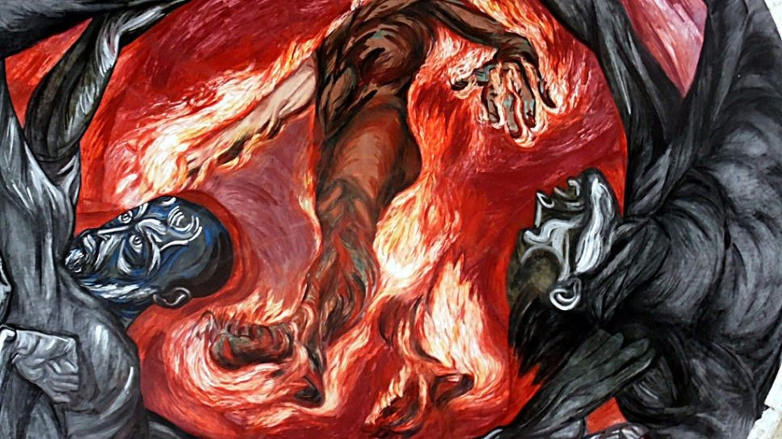
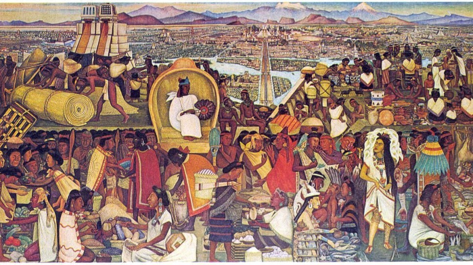
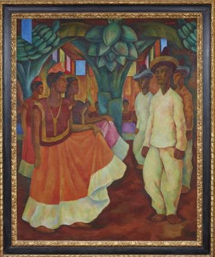
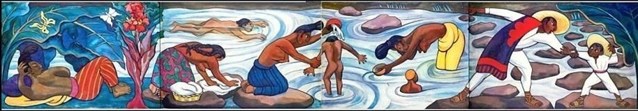
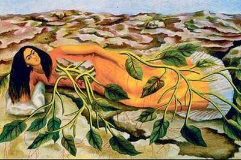

Ubicado en el Hospicio Cabañas en la capital del estado de Jalisco, esta monumental obra está creada sobre una de las cúpulas del emblemático recinto. El espacio que se utilizó de lienzo, representó todo un reto, pues por su curvatura los trazos debieron pensarse con detenimiento. Lo maravilloso de esta obra de arte es que, si pasas por el espacio en el que se encuentra la pintura. podrás apreciar increíbles efectos tridimensionales.

Sin ser documentos históricos en sí, esta serie de murales de Diego Rivera, ubicados al interior del Palacio Nacional, dan muestra de lo que fue la vida cotidiana en México Tenochtitlan.

Es una pintura al óleo del pintor mexicano Diego Rivera, realizada en el año 1928. Se considera la obra más importante de Diego Rivera en una colección privada fuera de México.

Río Juchitán es un mural de Diego Rivera, . En esta obra plasmó una escena inspirada en dichos paisajes. En uno de los lados, un padre ayuda a su hijo a cruzar el río, seguido de una mujer con el torso desnudo que lava su cabello con una jícara. Debajo suyo hay un niño con gorra. La escena sigue con una madre bañando a su hijo, otra mujer lavando la ropa y un niño nadando. Al costado derecho, entre vegetación y mariposas, otra mujer recostada contempla la escena.

En esta pintura ella está fusionándose con una planta, convirtiéndose en parte de la Tierra. ... La sangre de Frida fluye a través de la viña a los capilares rojos que se extienden más allá de la viña para alimentar a la tierra seca. En esta pintura, Frida parece aludir a sus raíces mexicanas.
